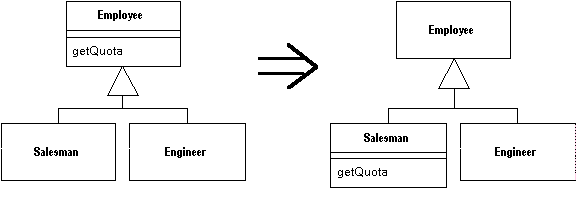

Push Down Method
Behavior on a superclass is relevant only for some of its subclasses.
Move it to those subclasses.

For more information see page
328
of
Refactoring
| Refactoring Home |
| Alphabetical List |